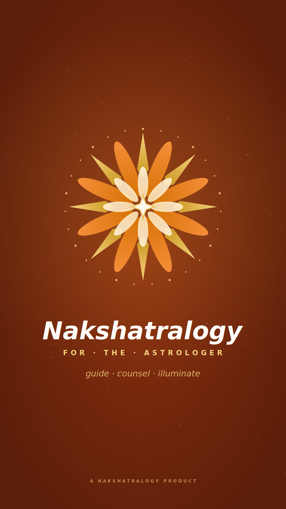

Ivory
Maroon
Saffron
Transparent
A distinct visual identity for the astrologer-side companion app — same Nakshatralogy mandala, deep saffron+maroon background to differentiate from the user app on home screens.
The User app uses cosmic dark navy (#0A0A24) — calm, mystical, for clients seeking guidance. The Astrologer app uses deep saffron/maroon (#7C2D12) — warm, professional, evoking the saffron robes of Vedic astrologers. Both share the same mandala (8 gold spikes + copper/cream petals + 27 nakshatra dots + center star), keeping the brand unified while making it impossible to confuse the two on a phone screen.


